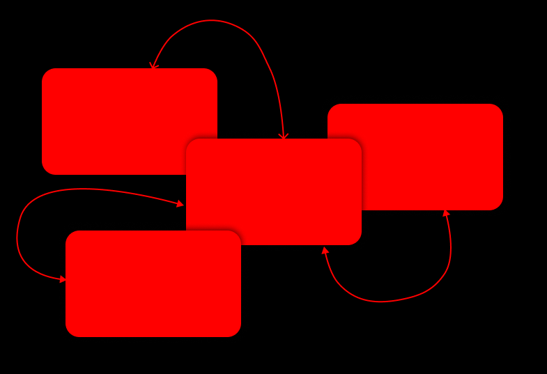

Interactive Media Products
In my evidence for interactive media products, I'll showcase my design journey from wireframes to final products, +
explaining my choices along the way.
I'll share how each decision, from layout to color, was made with the user in mind.
Then, I'll proudly present the dynamic websites, mobile apps, or multimedia presentations I've created,
demonstrating how users interact with them.
This evidence reflects not just technical skill but also my ability to craft engaging digital experiences.
Join me as I unveil the culmination of my efforts in interactive media.
Read More
Development and Version Control
Here I will show and explain you some code snippets that I think are relevant and share you a link to my GitHub page.
Read More


Iterative design
Here you will read about my designs and how I got to the end product of it.
I will show my iterations, and they explain my design chooses click on the button below to read more
Read More
Professional standard
Here I will tell you what I did to show how professional I am,
how i contact with stakeholders
and how I create my research based on the CMD-methods.
I will also show some research I did and how I got to the end product of it. Click on the button below to read more.
Read More

Personal Leadership
Here I will tell you about what I did and what I do to learn more about what I can do in the future and what the possibility is for my future
Read More